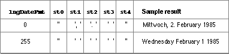

Legacy Document
Important: The information in this document is obsolete and should not be used for new development.
Important: The information in this document is obsolete and should not be used for new development.


The Intl1Rec Data Type
You can access the contents of the long-date-format resource through the
Intl1Rec data type.
TYPE Intl1Rec = PACKED RECORD days: ARRAY[1..7] OF Str15; {day names} months: ARRAY[1..12] OF Str15; {month names} suppressDay: Byte; {elements to suppress} lngDateFmt: Byte; {order of elements} dayLeading0: Byte; {leading 0 in day no.?} abbrLen: Byte; {abbreviation length} st0: PACKED ARRAY[1..4] OF Char; {separator string} st1: PACKED ARRAY[1..4] OF Char; {separator string} st2: PACKED ARRAY[1..4] OF Char; {separator string} st3: PACKED ARRAY[1..4] OF Char; {separator string} st4: PACKED ARRAY[1..4] OF Char; {separator string} intl1Vers: Integer; {version & region} localRtn: ARRAY[0..0] OF Integer; {flag for extended itl1} END; TYPE Intl1Ptr = ^Intl1Rec; TYPE Intl1Hndl = ^Intl1Ptr;
Field Description
days- An array of 7 day names (ordered for days corresponding to Sunday through Saturday). Each day name may consist of a maximum of 15 characters.
months- An array of 12 month names (ordered for months corresponding to January through December). Each month name may consist of a maximum of 15 characters.
suppressDay- A byte that lets you omit any element in the long date. To include the day name in the long date, you set the field to 0. To suppress the day name, set the field to 255 ($FF).
- If the value does not equal 0 or $FF, this field is treated as bit flags. You can use the following predefined constants as masks to set the appropriate bits in the
suppressDaybyte.
Constant Value Explanation supDay 1 Suppress day of month supWeek 2 Suppress day name supMonth 4 Suppress month supYear 8 Suppress year - Note that a value of 2 is same as a value of $FF in this field.
lngDateFmt- The byte that indicates the order of long date elements. If the byte value of the field is neither 0 (which specifies an order of day/month/year) nor $FF (which specifies an order of month/day/year), then its value is divided into 4 fields of 2 bits each. The least significant bit field (bits 0 and 1) corresponds to the first element in the long date format, whereas the most significant bit field (bits 6 and 7) specifies the last (fourth) element in the format. You can use the following predefined constants to set each bit field to the appropriate value.
Constant Value Explanation longDay 0 Day of the month longWeek 1 Day of the week longMonth 2 Month longYear 3 Year - Note that these constants represent values for the 2-bit field, and are neither masks nor bit numbers. For example, suppose you wanted long dates to appear in this order: day of the week, day of the month, month, and year. You would set the value of
longDateFmtlike this:longDateFmt := longWeek*1 {sets bits 0 and 1} + LongDay*4 {sets bits 2 and 3} + longMonth*16 {sets bits 4 and 5} + longYear*64; {sets bits 6 and 7}Figure B-3 gives two examples of how the Text Utilities routines format dates based on the fields in the numeric-format resource. The examples assume that the
- dayLeading0
- If 255 ($FF), specifies a leading zero in a day number. If 0, no leading zero is included in the day number.
- abbrLen
- The number of characters to which month and day names should be abbreviated when abbreviation is desired.
st0- String that precedes (in memory) the first element in a long date. See Table B-5 and Figure B-3.
st1- String that separates the first and second elements in a long date. See Table B-5 and Figure B-3. This string is suppressed if the first element in the long date is suppressed.
st2- String that separates the second and third elements in a long date. See Table B-5 and Figure B-3. This string is suppressed if the second element in the long date is suppressed.
st3- String that separates the third and fourth elements in a long date. See Table B-5 and Figure B-3. This string is suppressed if the third element in the long date is suppressed.
st4- String that follows the fourth element in a long date. See Table B-5 and Figure B-3. This string is suppressed if the fourth element in the long date is suppressed.
Table B-5 Separator positions in long date format lngDateFmt Long date format 0 st0 day namest1 dayst2 monthst3 yearst4255 st0 day namest1 monthst2 dayst3 yearst4intl1Vers- Region code and version number. The code number of the region that this resource applies to is in the high-order byte, and the version number of this long-date-format resource is in the low-order byte.
localRtn- Originally designed to contain a routine that localizes sorting order; now unused for that purpose. If an extended long-date-format resource is available (see the next section), this field contains the hexadecimal value $A89F as the first word.
suppressDayanddayLeading0fields contain 0. If theSuppressDayfield contains a value of 255, the formatting routines omit the day and the punctuation indicated in thest1field. If thedayLeading0field contains a value of 255, the Text Utilities place a 0 before day numbers less than 10.Figure B-3 Examples of long date formatting
